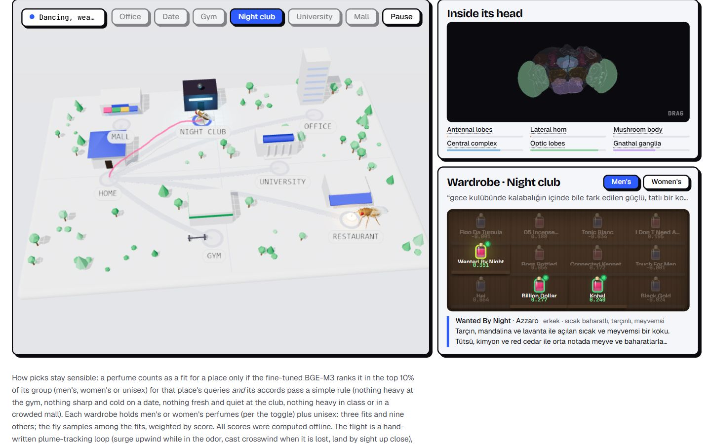

Live demo
Fly wardrobe
A 3D fruit fly picks a perfume for the office, a date, the gym, a night club, the university and the mall from a reshuffled wardrobe using the koku retriever, then tracks the odor plume there while its FlyWire brain lights up.